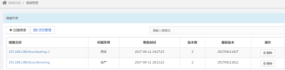
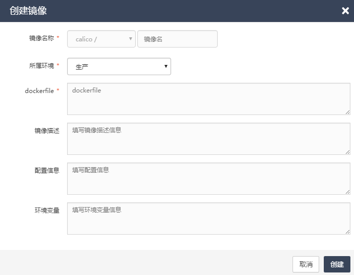
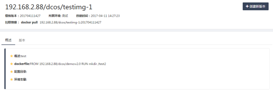
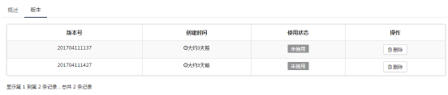
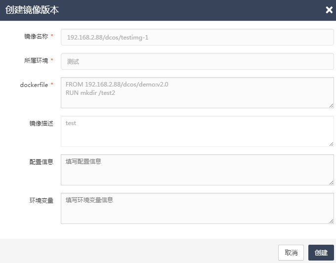
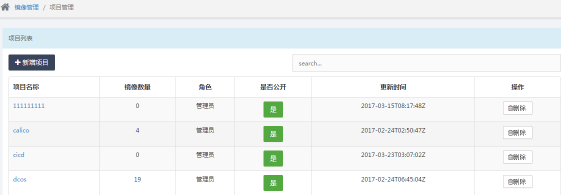
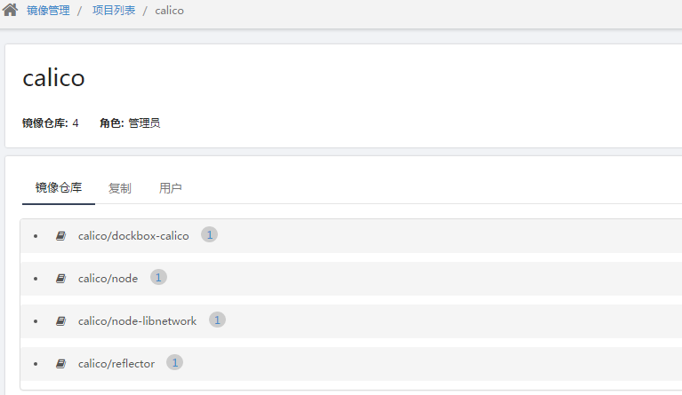
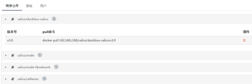
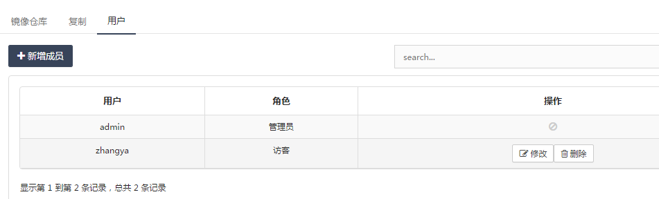
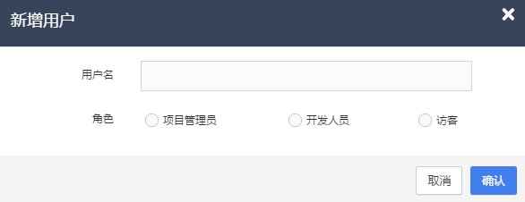

镜像管理
功能介绍：镜像管理界面主要为用户提供DCOS系统中所有镜像的概要信息。
镜像列表
在镜像列表中展示了每个镜像的镜像名称、所属环境、更新时间、版本数、最新版本等信息。图2.4.1-1

图2.4.1-1
镜像搜索：用户在镜像管理列表的搜索框中，输入镜像信息后，镜像列表中即可显示所有匹配该信息的镜像。
创建镜像：用户在镜像管理列表中，点击“创建镜像”按钮后，系统弹出创建镜像的弹出，用户需选择一个镜像名称后，输入镜像名、所属环境、dockerfile、镜像描述、配置信息、环境变量等信息后，点击“创建”按钮，系统即开始创建一个镜像。图2.4.1-2

图2.4.1-2
镜像详情：用户在镜像管理列表中，选中一个镜像后，点击镜像名称，可以进入镜像的详情页面，页面上方展示了镜像的镜像名称、最新版本、所属环境、创建时间、拉取镜像等信息；页面下方的”概述“中显示了镜像的概述信息、dockerfile、配置目录、环境变量等信息（图2.4.1-3)；页面下方的“版本”中显示了每个版本的版本号、创建时间、使用状态等信息。图2.4.1-4

图2.4.1-3

图2.4.1-4
创建镜像新版本：用户在镜像详情页面中点击“创建新版本”按钮后，系统弹出创建新版本的弹窗，弹窗中显示了镜像名称、所属环境、dockerfile、镜像描述、配置信息、环境变量等信息，用户可以编辑dockerfile、配置与环境变量等信息，编辑完成后，点击”创建“后，系统即可生成一个新的镜像版本。图2.4.1-5

图2.4.1-5
删除版本：用户在镜像详情页面的版本列表中，选中一个镜像版本后，点击操作下的“删除”按钮，系统弹出删除镜像版本确认信息，用户确认后，点击删除按钮，即可删除选中版本（当选中版本正在使用，则不得删除）。
项目管理
项目列表：在项目列表中展示了每个项目的项目名称、镜像数量、角色、是否公开、更新时间等信息。图2.4.2-1

图2.4.2-1
项目搜索：用户在项目列表的搜索框中，输入项目信息后，项目列表中即可显示所有匹配该信息的项目。
是否公开：在项目列表中，选中一个项目后，可以对“是否公开”进行切换。
删除：在项目列表中，选中一个项目后，点击操作下的“删除”按钮后，系统弹出删除项目的确认框，用户点击”确认“按钮后，系统即会删除选中的项目（当项目中还有镜像在使用时，则不得删除）。
项目详情：用户在项目列表中，选中一个项目后，点击“项目名称”，即可进入项目的详情页面，项目详情页面中展示了项目的项目名称、镜像仓库数量、角色等信息。图2.4.2-2

图2.4.2-2
项目-镜像仓库：用户在项目详情页面的镜像仓库中，可以查看该项目下的所有项目名称，点击项目名称后的数字时，即可查看项目下这个镜像的版本号与pull命令。图2.4.2-3

图2.4.2-3
项目-用户：用户在项目详情页面的用户中，可以查看该项目下的所有用户的用户名与角色信息。图2.4.2-4

图2.4.2-4
用户-新增成员：在用户列表中，点击“新增成员”按钮后，系统弹出新增用户的弹窗，在弹窗中输入用户名、选择角色后（用户名须为平台管理-用户列表中的用户），点击“确认”按钮后，系统即可为该项目新增一个用户。图2.4.2-5

图2.4.2-5
用户-修改：在用户列表中，选中一个用户后，点击操作下的“修改”按钮，系统弹出用户修改弹窗，用户可以对选中要修改的用户的角色进行修改。
用户-删除：在用户列表中，选中一个用户后，点击操作下的“删除”按钮，系统弹出用户删除弹窗，用户确认删除信息后，点击“确认”按钮后，即可对选中的用户进行删除。
用户-搜索：在用户列表的“search”框中，输入用户信息后，用户列表中即会显示出所有匹配该信息的用户。